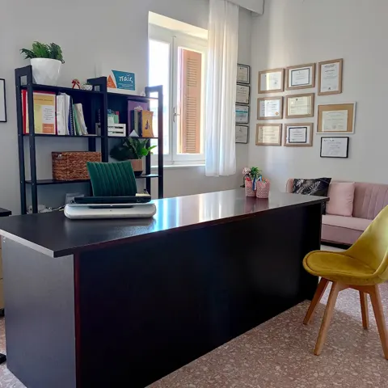

Λογοθεραπεία
Αξιολόγηση & θεραπεία διαταραχών λόγου, ομιλίας, επικοινωνίας και φωνής.
- Αρθρωτικές διαταραχές
- Γλωσσικές δυσκολίες
- Τραυλισμός
- Φωνητικές παρεμβάσεις
Πύργος Ηλείας · από το 2010
✔ Συνεργασία με ΕΟΠΥΥ
Γιατί… Κάθε Λέξη Μετράει❗
Πρόληψη – Διάγνωση – Θεραπεία – Αποκατάσταση
Το Κέντρο μας λειτουργεί από το 2010 στον Πύργο Ηλείας με σκοπό την έγκαιρη πρόληψη, διάγνωση και αποκατάσταση διαταραχών λόγου, επικοινωνίας, μάθησης και συναισθηματικής ανάπτυξης.
Η ομάδα μας απαρτίζεται από έμπειρους λογοθεραπευτές, εργοθεραπευτή, παιδαγωγό και ψυχολόγο με πάνω από 15 χρόνια εμπειρίας. Παρέχουμε εξατομικευμένα προγράμματα υποστήριξης σε παιδιά και ενήλικες, σε ένα ζεστό και φιλικό περιβάλλον. Το Κέντρο συνεργάζεται με τον ΕΟΠΥΥ.

Η υπεύθυνη του κέντρου, Κωνσταντίνα Κανδρή, είναι Λογοθεραπεύτρια - Ειδική Παιδαγωγός M.Ed. με εξειδίκευση στον Αυτισμό και τη Δυσλεξία. Είναι πτυχιούχος του τμήματος Λογοθεραπείας Πατρών με μεταπτυχιακές σπουδές (Master) στην Ειδική Αγωγή και Εκπαίδευση στο Πανεπιστήμιο Λευκωσίας σε συνεργασία με το Πανεπιστήμιο Πατρών.
Είναι πιστοποιημένη Σύμβουλος χορήγησης Αθηνά Τεστ (Διάγνωση Δυσκολιών Μάθησης), και πιστοποιημένη στην ανίχνευση και πρώιμη ανίχνευση αυτισμού με τη σταθμισμένη δοκιμασία “παις” και τα διαγνωστικά εργαλεία ADOS και ADI-R από το Πανεπιστήμιο Μακεδονίας. Επίσης, έχει λάβει πιστοποίηση στη μέθοδο S.C.E.R.T.S. (ενίσχυση της κοινωνικής επικοινωνίας, τη συναισθηματική ρύθμιση και την υποστήριξη της ικανότητας συνδιαλλαγής) για άτομα στο φάσμα του αυτισμού.
Έχει εκπαιδευτεί και πιστοποιηθεί στη μέθοδο PECS επίπεδο 1 για άτομα με διαταραχές στο φάσμα του αυτισμού ή άλλες διαταραχές επικοινωνίας χωρίς λειτουργικό λόγο και στη μέθοδο ABA (Εφαρμοσμένη Ανάλυση Συμπεριφοράς) για μαθητές με αυτισμό και άλλες σοβαρές αναπτυξιακές διαταραχές. Ακόμα, είναι εκπαιδευμένη στη δομημένη διδασκαλία TEACCH (Θεραπεία και Εκπαίδευση Παιδιών με Αυτισμό και Διαταραχές Επικοινωνίας) με πιστοποίηση από το Πανεπιστήμιο της Βόρειας Καρολίνας Η.Π.Α. και στη μέθοδο Greenspan Floortime Approach από το Greenspan Floortime Center Η.Π.Α.
Επιπλέον, έχει μετεκπαιδευτεί σε πλήθος επιμορφωτικών προγραμμάτων και πρακτικών σεμιναρίων όπως Αισθητηριακή Ολοκλήρωση & Αυτισμός, Παιγνιοθεραπεία για Παιδιά & Εφήβους, Αυτορρύθμιση στο σχολείο για παιδιά με Αυτισμό, Διάσπαση Προσοχής ή Αισθητηριακές και Συναισθηματικές Διαταραχές κ.α.
Αξιολόγηση & θεραπεία διαταραχών λόγου, ομιλίας, επικοινωνίας και φωνής.
Ανάπτυξη δεξιοτήτων αυτοεξυπηρέτησης, κινητικότητας και αισθητηριακής ολοκλήρωσης.
Εξατομικευμένα προγράμματα για μαθησιακές δυσκολίες και ΔΕΠ-Υ.
Εξατομικευμένες παρεμβάσεις για δυσκολίες σίτισης και κατάποσης.
Πρόγραμμα προαγωγής της ψυχικής υγείας παιδιών, εστιάζει στη βελτίωση της κοινωνικής συμπεριφοράς, της επικοινωνίας, της συναισθηματικής ωρίμανσης και των γνωστικών δεξιοτήτων.
Υποστηρικτικές συνεδρίες για γονείς, με στόχο την ενίσχυση της επικοινωνίας, τη διαχείριση συμπεριφοράς και τη συναισθηματική στήριξη του παιδιού.
Παρεμβάσεις για τη διαχείριση συναισθημάτων, άγχους και ψυχολογικής ενδυνάμωσης παιδιών και εφήβων.
Θεραπευτική αξιοποίηση του παιχνιδιού για ενίσχυση συναισθηματικής και κοινωνικής εξέλιξης.
Παρεμβάσεις για τη βελτίωση της αισθητηριακής επεξεργασίας και της καθημερινής λειτουργικότητας.
Αξιολόγηση δεξιοτήτων απαραίτητων για την ομαλή μετάβαση στο σχολείο.
Εξατομικευμένο πρόγραμμα προετοιμασίας για παιδιά προσχολικής ηλικίας.
Έγκαιρη ενίσχυση της ανάπτυξης σε παιδιά με ανιχνευόμενες ή πιθανολογούμενες δυσκολίες.
Λογοθεραπεύτρια - Ειδική Παιδαγωγός M.Ed.
Επιστημονικά ΥπεύθυνηΚάθε παιδί αναπτύσσεται με τον δικό του ρυθμό. Ενδεικτικά, αξίζει να ζητήσετε τη γνώμη ειδικού αν το παιδί:
Αν κάτι σας προβληματίζει, μια έγκαιρη αξιολόγηση δίνει απαντήσεις. Όσο νωρίτερα ξεκινά η παρέμβαση, τόσο καλύτερα τα αποτελέσματα.
Ξεκινάμε με μια συζήτηση με τους γονείς για το ιστορικό του παιδιού και για όσα σας απασχολούν. Στη συνέχεια γνωρίζουμε το παιδί μέσα από δραστηριότητες και παιχνίδι, ώστε να νιώθει άνετα. Στο τέλος σας εξηγούμε τα ευρήματα και, αν χρειάζεται, σας προτείνουμε ένα εξατομικευμένο πρόγραμμα.
Σε παιδιά από τα πρώτα χρόνια της ζωής τους (πρώιμη παρέμβαση), σε παιδιά σχολικής ηλικίας και εφήβους, αλλά και σε ενήλικες.
Ναι, το Κέντρο συνεργάζεται με τον ΕΟΠΥΥ. Για να καλυφθούν οι συνεδρίες από τον ΕΟΠΥΥ χρειάζεται γνωμάτευση από γιατρό της κατάλληλης ειδικότητας. Επικοινωνήστε μαζί μας και θα σας εξηγήσουμε τα δικαιολογητικά βήμα βήμα. Για ιδιωτικές συνεδρίες δεν χρειάζεται παραπομπή.
Εξαρτάται από τις ανάγκες και τους στόχους του κάθε παιδιού. Παρακολουθούμε την πρόοδο τακτικά και σας ενημερώνουμε σε κάθε στάδιο.
Η συμμετοχή της οικογένειας παίζει πολύ σημαντικό ρόλο. Σας δίνουμε ιδέες και δραστηριότητες για το σπίτι, ενώ μέσω της Συμβουλευτικής Γονέων μπορείτε να έχετε και πιο οργανωμένη υποστήριξη.
Καλέστε μας στο 26210 29798 ή στο 6971 849 025, ή στείλτε μας μήνυμα από τη φόρμα επικοινωνίας και θα σας καλέσουμε εμείς.
Αν σας βοηθήσαμε, μια κριτική σας στο Google βοηθά κι άλλες οικογένειες να μας βρουν.
Σταθερό: 26210 29798
Κινητό: 6971 849 025
Ακολουθήστε μας!